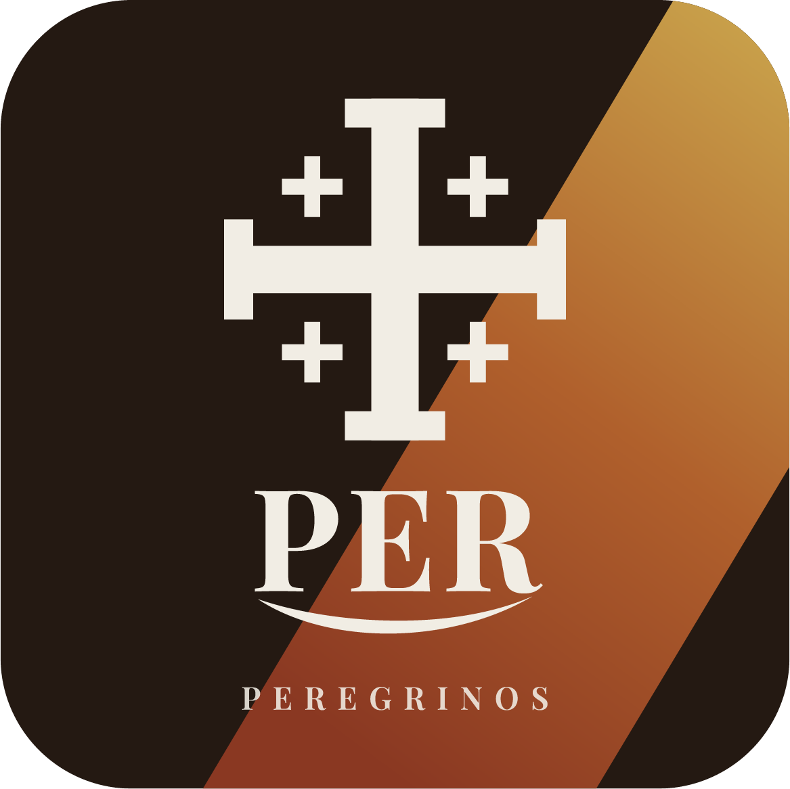
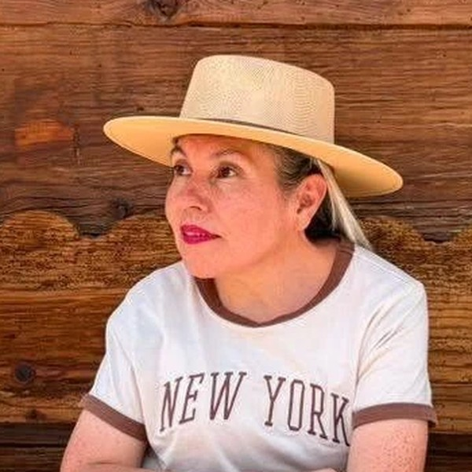
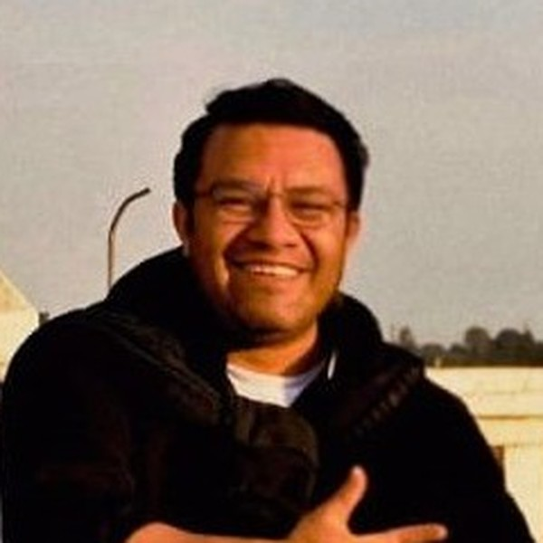
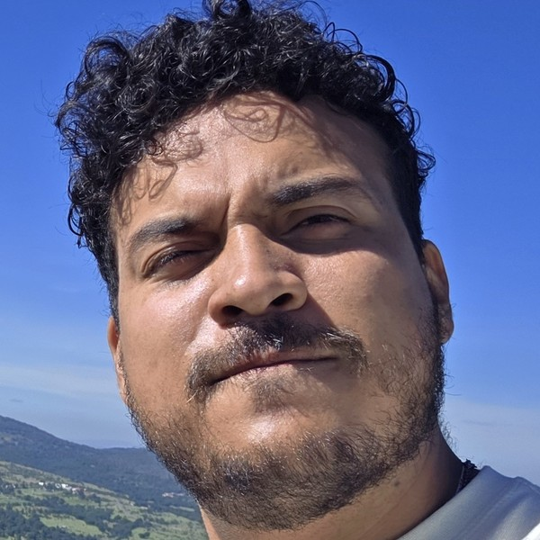
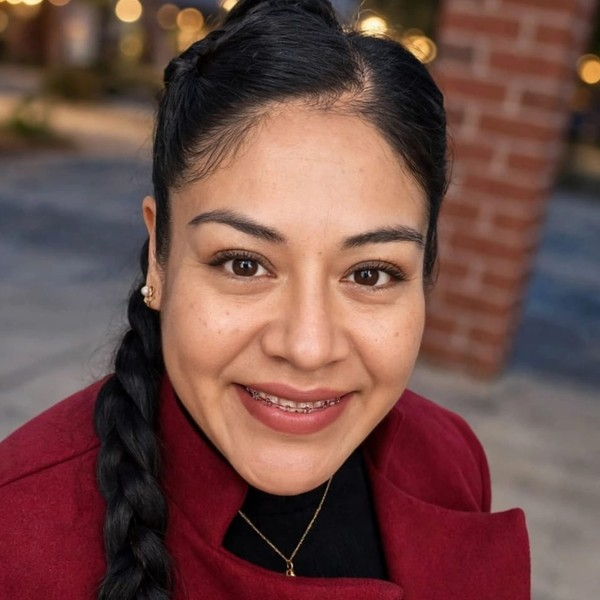

MI CAMINO
ES JESÚS
Escuela de Nueva Evangelización
Presentación para
Excmo. Sr. Mons. Jorge Carlos Patrón Wong
Arzobispo de Puebla
Puebla, MéxicoNoviembre 2026
01 / 14Mi Camino es Jesús (MCJ) es una escuela de Nueva Evangelización, en comunión con la Iglesia, que acompaña a jóvenes y adultos en un encuentro personal y transformador con Cristo.
Nace con raíz joven y un lenguaje directo y cercano: una fe que se vive con alegría, sin dejar de ser exigente y real, para quien empieza, para quien sirve y para quien busca un camino de regreso.
02 / 14Formar discípulos misioneros, jóvenes y adultos, que vivan, anuncien y sirvan el Evangelio con alegría, siendo un punto de quiebre para el mundo actual.
Ser una escuela de referencia en la Nueva Evangelización, donde cada persona, sin importar su edad, encuentre un camino claro de encuentro, formación y misión con Jesucristo.
03 / 14Cada experiencia de MCJ recorre el mismo itinerario del discípulo: del encuentro a la misión.
Todo comienza con un encuentro real con Jesucristo vivo, sin máscaras ni prisas.
Crecemos en la fe con estudio, oración y vida sacramental.
Nadie recorre este camino solo: la fraternidad es parte esencial.
Salimos a anunciar lo que hemos vivido, sin miedo.
04 / 14
XP Lev es el método formativo de MCJ: retiros, talleres y adoraciones diseñados para las etapas de vida y vocación de cada persona. Cada experiencia es un paso consciente en el camino de discipulado.
Cada tema de cada experiencia sigue estos cinco pasos. Cada formato tiene su ficha:
05 / 14Cada Dérej (camino, en hebreo) es una ruta formativa pensada para una etapa y realidad concreta de la vida.
06 / 1407 / 14
Los seis Dérej forman a las personas por etapa de vida. Peregrinos MCJ es el “+1”: una dimensión aparte, no un séptimo Dérej, dedicada a caminar hacia Cristo en los lugares de la fe.

08 / 14Dérej Guibor, paso 1. El rescate de la masculinidad en un mundo que la tiene confundida: el modelo de Cristo, responsabilidad, liderazgo servicial y una fe que no se acobarda.
Asistieron 40 hombres a la casa de retiros El Calvario, Casa de la Pastoral Juvenil de Puebla. Varios llegaron sin interés, por invitación de su esposa o como requisito de catequesis. Al terminar, coincidieron en que no había sido un retiro más: fue distinto, dinámico y mucho más de lo que esperaban.
09 / 14Estas fechas están confirmadas por ahora. Seguimos planeando más actividades y las iremos dando a conocer.
Calendario siempre al día en micaminoesjesus.org/calendario.
10 / 14
Pbro. Lic. Theol. Cristopher Cortés PliegoFundador · Asesor espiritual
Jehosua A. Castañeda OrtizFundador · Equipo pastoral
Maribel Pinto CoronaEquipo pastoral11 / 14Proyectos aliados que llevan a Jesús a la moda, a las redes y al mundo profesional.

Profesionales y empresas que conectan, hacen networking y viven su fe en el ámbito laboral.

Streetwear con identidad católica: fe y estilo urbano para expresarla todos los días.

Reels y videos que llevan el Evangelio al lenguaje de las redes.
12 / 14Escanee el código con la cámara del teléfono para abrir el sitio.
13 / 14Con humildad, pedimos a Su Excelencia:
Su bendición y una carta de respaldo para presentarnos a los párrocos de la Arquidiócesis.
Su orientación para presentar a su revisión nuestros estatutos e iniciar, si lo juzga conveniente, el camino hacia el reconocimiento como asociación privada de fieles.
La confirmación del Pbro. Cristopher Cortés Pliego como asesor espiritual y la designación de un enlace arquidiocesano que nos vincule con las pastorales afines a nuestro servicio, entre ellas Juvenil, Familiar, Catequesis y Laicos.
La apertura de espacios y sedes para retiros y encuentros, según disponibilidad.

No tengas miedo ni te acobardes, porque el Señor tu Dios estará contigo dondequiera que vayas.
Gracias, Excelencia, por su tiempo, su bendición y su acompañamiento como Pastor de nuestra Iglesia.